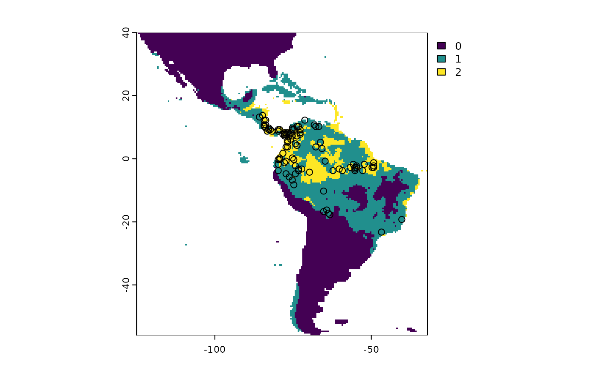
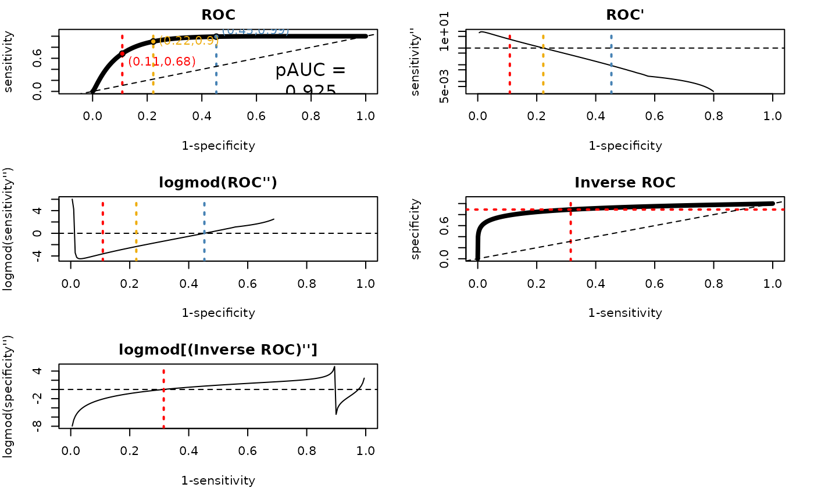
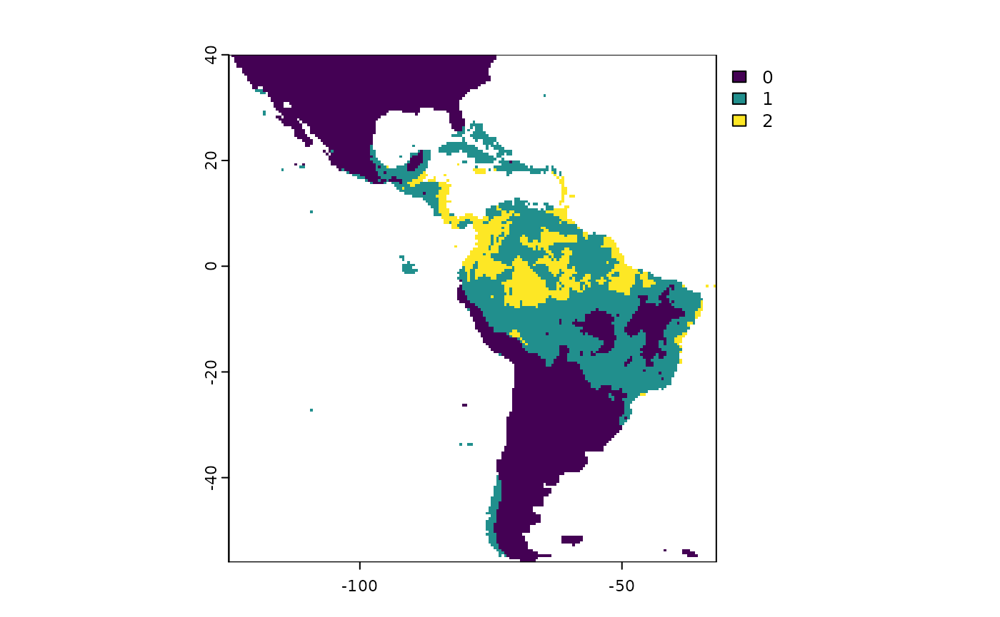

Trinary Maps Vignette
Cory Merow and Gonzalo E. Pinilla-Buitrago
2014-08-31
trinaryMaps.RmdBackground
Continuous model predictions are compared against binary data for evaluation in a variety of application; I’m thinking about Species Distribution Models (SDMs) but the following could be probably be used for any application. To evaluate the continuous predictions of the model - in the SDM case the ‘suitability’ scores - one must choose a threshold value of suitability above which the model predicts a species presence and below which the model predicts absence. Coming up with a reasonable threshold is difficult for SDMs, particularly when presence-backround data are involved. Use of the AUC statistic is meant to avoid the issues of choosing a particular threshold and evaluate model performance over all possible thresholds. Even still, in SDM applications, there is still often a need for generating a binary map from continuous predictions, which means picking a threshold.
The specific problem of choosing a threshold when using presence-background data for SDMs is that the background is ‘contaminated’ - it contains (unknown) presences that biases binary classification statistics. One common threshold choice is based on maximizing the sum of sensitivity and specificity (i.e., the Youden threshold), but this penalizes a model for incorrectly predicting background points as presence locations, when in fact they may be presences.The contribution of ‘trinaryMaps’ is to put some useful bounds on what reasonable values of the threshold might be. If we can’t determine an optimal threshold, we can at least identify upper and lower limits so we know we have it surrounded.
The approach to identifying these limits is heuristic and not based on any formal theory; rather it is based on analyzing the ROC curve and identifying limits beyond which model predictions aren’t likely to be very useful in the application of SDMs. For example, why would any care about the discrimination of an SDM based on a threshold that gets only 7% of presences correct? This implies there should be a upper limit on a useful threshold (higher threshold implies fewer predicted presences). Similarly, why would anyone want a model that predicts that only 4% of the background is an absence? If your model were that non-discriminating, why even build a model when you could just use the modeling domain as a range estimate? So this suggests there is a useful lower limit (lower threshold implies more predicted presences). How can we objectively find these upper and lower limits? Answering that is the contribution of trinaryMaps.
Using Trinary Maps
Building trinary maps involves the same inputs as one would use for binary classification and in this package is specifically structured for use with SDMs: 1. Model prediction (spatRaster) 2. Occurrences coordinates (data.frame) 3. Background coordinates (data.frame)
Basic Workflow
The trinaryMapWorkflow() function is the main entry
point for using the package. It performs the following steps: 1.
Calculates upper and lower ROC bounds 2. Creates a trinary map based on
these bounds 3. Calculates range sizes associated with the generated
trinary map Plots the ROC curve with upper and lower ROC bounds.
Here’s an example of how to use the trinaryMapWorkflow function:
## terra 1.7.78
# YOU CAN REGENERATE THE OCCURRENCE, BACKGROUND AND RASTER PREDICTION OF
# THIS EXAMPLE USING THE CODE AT THE END OF THIS VIGNETTE
ext_data <- system.file("extdata", package = 'trinaryMaps')
occs <- read.csv(paste0(ext_data, "/occs.csv"))
bg <- read.csv(paste0(ext_data, "/bg.csv"))
r <- terra::rast(paste0(ext_data, "/prediction.tif"))
# Run trinaryMapWorkflow
tr <- trinaryMapWorkflow(pres = occs,
background = bg,
rModel = r)## 94 presences and 9681 background points used for building trinary mapsPlotting the Trinary Map
The trinary map is a categorical map that has been transformed into
three classes based on the upper and lower bounds calculated by the
trinaryMapWorkflow() function. This plot provides a visual
representation of where the three classes occur. Class 0 corresponds to
pixels with values below the higher ROC bound threshold (definitely
unoccupied habitat), class 1 correspond to pixels greater or equal to
the upper ROC bound threshold but less than the lower ROC bound
threshold (marginal, occasional, or uncertain occupied habitat), and
class 2 denotes pixels with values above the lower ROC bound threshold
(likely occupied habitat).

Range Size
This chunk calculates the range sizes associated with each threshold value in the trinary map. The range size is an important metric that can be used to understand the sensitivity and specificity of the model predictions at different threshold values.
# Area
trinaryRangeSize(tr$trinary.rasters)## range.size.lo.km2 range.size.hi.km2
## 1 13413279 3385016Trinary Map ROC Plots
The function trinaryROCPlot() generates five ROC plots
that help determine the lower and upper bound thresholds. These plots
facilitate understanding of how the trinary map is constructed.
ROC
This plot shows the smoothed ROC curve by binormal or density smoothing. The red dot marks the location of the lower ROC bound threshold, which represents the minimum sensitivity and maximum specificity value. The yellow dot indicates the youden threshold, corresponding to the maximum sum of sensitivity and specificity values. The blue dot marks the upper ROC bound threshold, which represents the maximum sensitivity and the minimum value on specificity.
ROC’: First Derivative
The first derivative of the smoothed ROC curve is shown here. This plot helps identify the point on the ROC curve where the trade-off between true positive rates and false positive rates is optimized. Note that the youden threshold corresponds to the root.
logmod(ROC’’): Logmod of Second Derivative
This plot displays the second derivative of the smoothed ROC curve after applying a logmod transformation. It helps to identify the upper ROC bound threshold (blue).
Inverted ROC
To calculate the upper bound threshold, the horizontal and vertical axes are inverted in this plot. This results in an “inverted ROC” curve where high specificity values correspond to low true positive rates, and vice versa.
logmod(Inverted ROC)
The second derivative of the inverted ROC curve is calculated after applying a logmod transformation. The red dot marks the lower ROC bound threshold.
trinaryROCPlot(tr$threshs$plotThings, trinaryDF = tr$threshs$trinaryDF)
Custom example (trinaryROCRoots)** (GEPB needs to ask CM)
The trinaryMapWorkflow() function calculates the upper
and lower ROC bounds using default parameters. If you want to customize
the calculation of both bounds, you can modify the following
parameters:
maxTPQuantile: A quantile value representing the predicted values at presence locations used to determine the upper ROC threshold for presence predictions. For example, a value of0.3means the function uses the 30th percentile of the predicted presence values as the upper threshold, ensuring that the model maintains at least 70% sensitivity.sdMultiplier: A scaling factor applied to the standard deviation of the predictions, used inconjunction with max.sens to calculate the lower ROC bound.max.sens: The maximum true positive rate allowed for the lower ROC bound calculation. This parameter is used in combination with sdMultiplier to determine the optimal threshold for the lower bound.
Here, we will modified the maximum quantile to 20th percentile, and change the maximum sensitivity allowed for the lower ROC bound to 0.99.
# Issues with maxTPQuantile, max.sens, and sdMultiplier. Results are the same that previus example.
tr2 <- trinaryMapWorkflow(pres = occs,
background = bg,
rModel = r,
maxTPQuantile = 0.5,
max.sens = 0.7)## 94 presences and 9681 background points used for building trinary maps
plot(tr2$trinary.rasters)
trinaryROCPlot(tr2$threshs$plotThings, trinaryDF = tr2$threshs$trinaryDF)Additional Code
library(predicts)
library(maxnet)
# Load example data
occurence <- system.file("/ex/bradypus.csv", package = "predicts")
occ <- read.csv(occurence)[, -1]
f <- system.file("ex/bio.tif", package = "predicts")
envs <- terra::rast(f)
# Prepare data for modeling
data <- terra::values(envs) |> as.data.frame()
data$ID <- 1:(terra::nrow(envs) * terra::ncol(envs))
occs.p <- terra::extract(envs, occ, cells = TRUE)
data$p <- rep(0, terra::ncell(envs))
data$p[occs.p$cell] <- 1
data$x <- terra::xFromCell(envs, 1:terra::ncell(envs))
data$y <- terra::yFromCell(envs, 1:terra::ncell(envs))
data <- na.omit(data)
# Build and predict model
mod <- maxnet(data$p, data[, 1:9])
p.vals <- predict(mod, terra::values(envs), type = "cloglog")
suitability <- rep(NA, terra::ncell(envs))
suitability[data$ID] <- p.vals
r <- envs[[1]]
names(r) <- "suitability"
terra::values(r) <- suitability
occs <- data[data$p == 1, c("x", "y")]
bg <- data[data$p == 0, c("x", "y")]